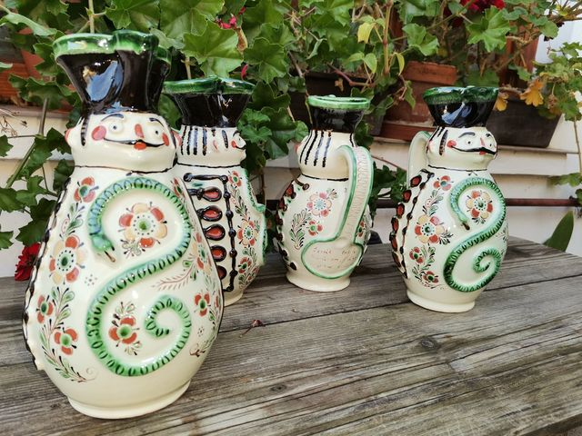
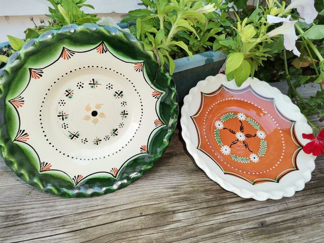
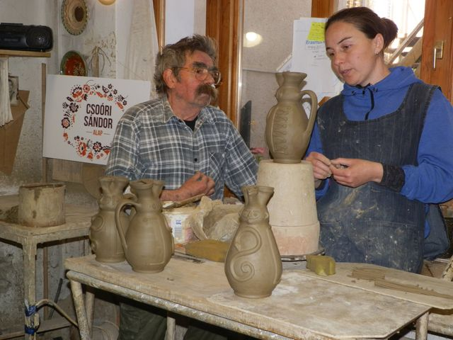
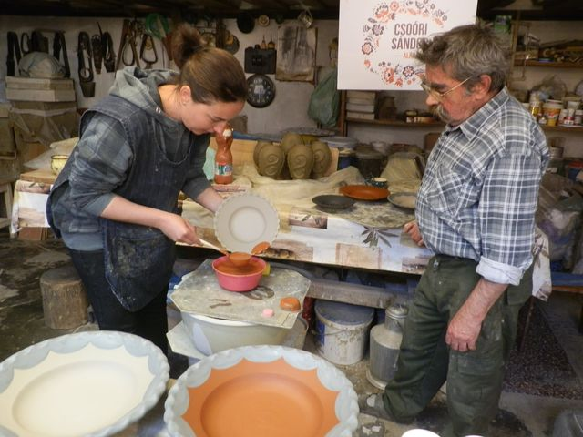
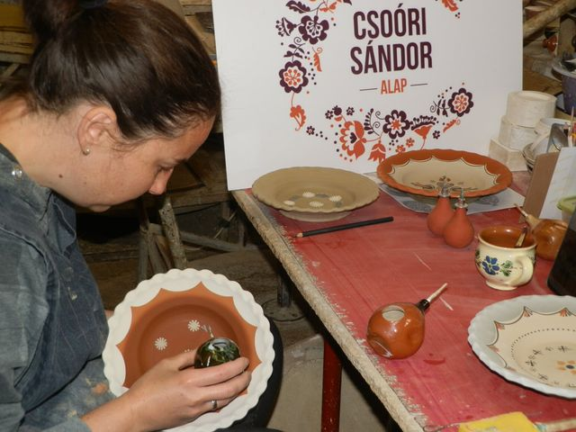

A Mester és Inas program 2022 áprilisában kezdetét vette Szűcs Imre műhelyében. Ez évben Németh Katalin fazekas érkezett Tiszafüredre Martonvásárról.
Első nap programja a Kiss Pál Múzeumban kezdődött, ahol a kiállított tiszafüredi kerámiákat tanulmányozta a „tanítvány” és a mesterrel megtervezték az elkövetkezendő napok feladatait. Ezt követően Tariczky Endre Régészeti Kiállítás Kutató-és Raktárbázisán, a Tiszafüreden és környékén folyt régészeti feltárások és ásatások anyagából összeállított kiállítást tekintették át. Az eligazodásban segített Dr. Füvessy Anikó, nyugalmazott múzeumigazgató és Dr. Mester Edit jelenlegi igazgató.
Már az első nap délután kezdetét vehette a munka, a kiválasztott füredi edények korongolása.
Következő közös munkanapon eljött a díszítés ideje. A jól sikerült korongozás után sok izgalomra ad okot ez a fázis, hiszen itt sok a hibázási lehetőség. Hála Istennek minden sikerült! A „tanítvány” ügyesen teljesítette ezt a feladatot is, szépen írókázta és karcolta tiszafüredi edényeit. Szárítás következett és hamarosan az égetés.
Kemenceszedés teljes sikert hozott, hiszen szépek lettek, igazán jól sikerültek a tiszafüredi edények. Katalin jó tanítvány volt, megfogadta a „Mester” tanácsait. Munkáját nagyban segítette az, hogy a korábban tanultakat, a Csuporné Angyal Zsuzsától elsajátított fogásokat alkalmazta a füredi munka során.
Oktatásunk a Csoóri Sándor Alap támogatásával jött létre
#csoorisandoralap
Az elkészült alkotásokat -rajtuk az alkotó kézjegyeivel - az alábbi képek mutatják.









